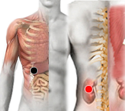

Abseso hepático
Par
hígado - riñón (I)

Generalidades:
Los absesos consisten en acumulación de pus, en este caso en el hígado como consecuencia de infección intestinal.
El absceso hepático amebiano es causado por la Entamoeba histolytica, infección también conocida como amebiasis o disentería amebiana. La bacteria enterobacter cloacae también puede producir abseso hepático.
La infección se presenta a nivel mundial, pero es más común en las áreas tropicales donde hay situaciones de hacinamiento y malas condiciones sanitarias. África, Latinoamérica, el sudeste asiático y la India tienen problemas de salud considerables a raíz de esta enfermedad.